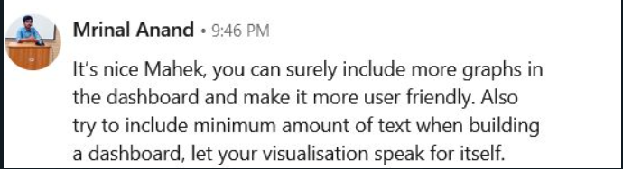

Mutual Funds: Insights
Feedback 1

Feedback 2 - Sarveshwaran Rajagopal
There should be less text in the dashboard, and try to increase the size of the datset and make it more detailed by adding all type of funds. But, for the given dataset the visualization is good. (This feedback was received on call with Mr. Sarveshwaran).
Feedback 3 - Ashutosh Tripathi
The visualization is good, remove the heat-map and replace it with some other graph as it is not conveying anything useful.(Using this feedback we removed the heatmap and replaced it with a highlight table, to make the dashboard more user friendly).